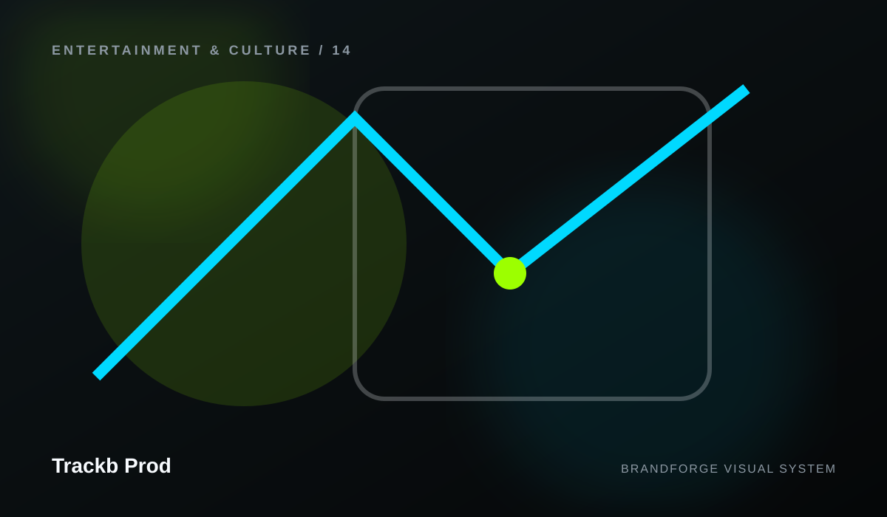

Account & access
Sign-in, permissions, credentials, ownership, and profile questions.
Trackb Prod
A structured help layer makes a large website easier to use and gives support requests better context.

Sign-in, permissions, credentials, ownership, and profile questions.
Understand what the business offers and where each capability fits.
Navigation, content, GitHub Pages, links, and public documentation.
Commercial questions should use verified business channels and real pricing only.
Collect reproducible steps, environment details, and impact before contacting support.
Do not publish secrets publicly; use the security route for sensitive reports.
NEED A HUMAN?